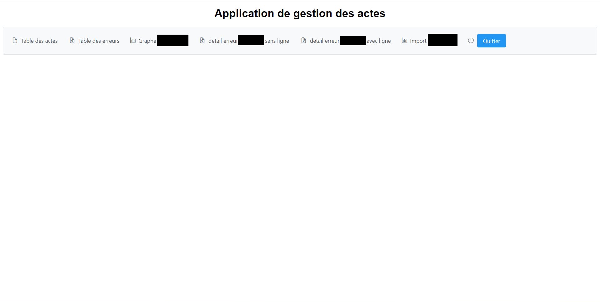
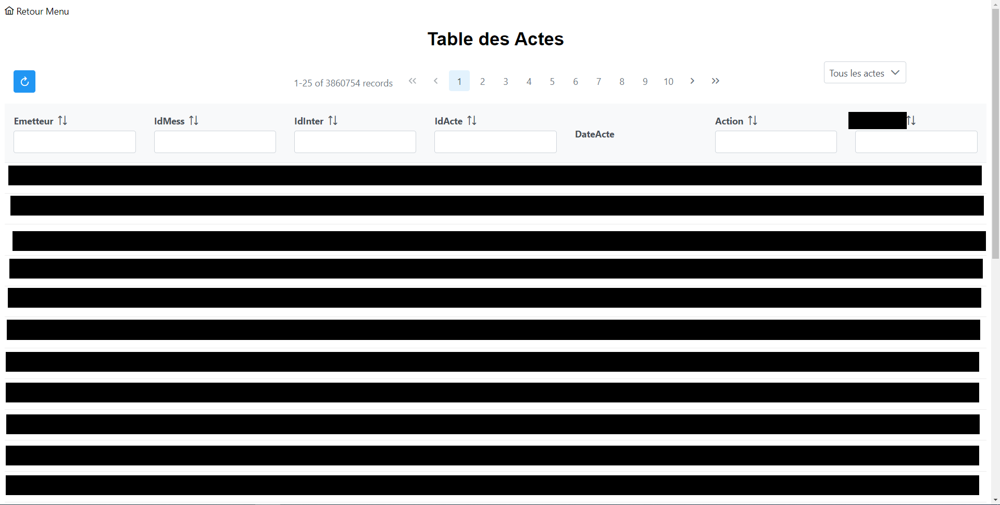
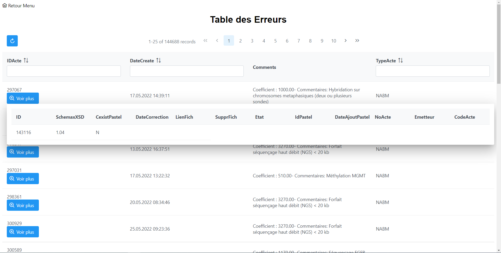
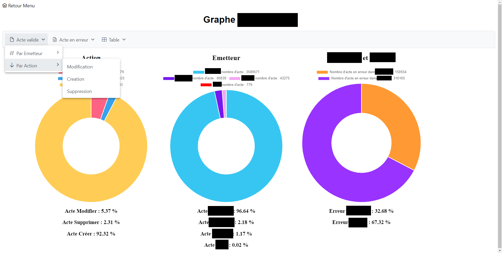
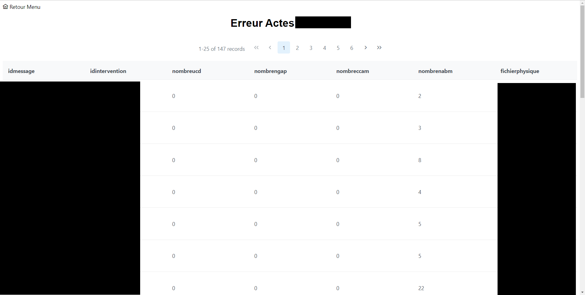

Étudiant en BTS SIO
Ce projet consistait à créer une application web qui affiche les actes médicaux en erreur dans une base de données. Pendant ce stage, j’ai utilisé JSF 4.0 (JavaServer Faces) un framework Java utilisé pour créer des applications Web. Pour nous faciliter la tâche nous avons aussi utilisé PrimeFaces 12 une bibliothèque de composants d'interface utilisateur open source. Le projet se découpe en sept pages :
La page d'accueil présente sept boutons, je ne parlerai ici des cinq premiers.
La première page affiche tous les actes médicaux en erreur ou non.
La deuxième page nous montre les actes en erreur dans la base de données sous la forme d’un tableau.
La troisième page affiche le nombre d'actions, le nombre d'actes émis par l'émetteur d’acte et le nombre d'erreurs de chaque API.
Si on clique sur le lien “Détail des Erreurs” cela nous mène à un tableau de toutes les erreurs du type prés sélectionné. Cela est utile pour avoir le chemin du fichier (qui est caché ici) pour corriger l’erreur.
{kind=link}
{kind=link}
{kind=link}
{kind=link}
{kind=link}
{kind=link}
{kind=link}